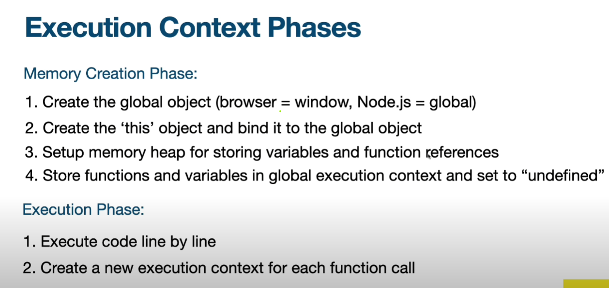
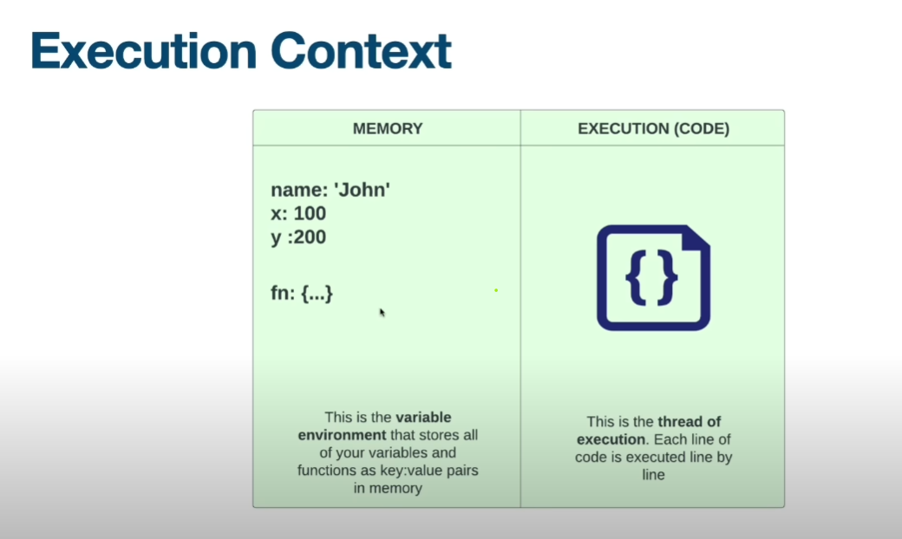
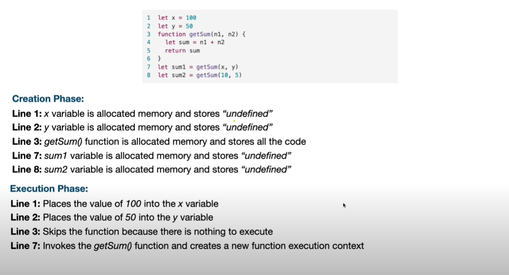
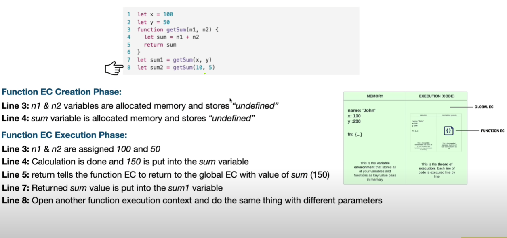
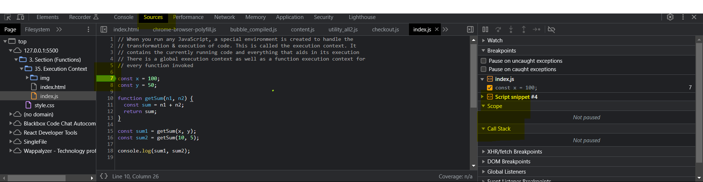

When you run any JavaScript, a special environment is created to handle the
transformation & execution of code. This is called the execution context. It
contains the currently running code and everything that aids in its execution
There is a global execution context as well as a function execution context for
every function invoked
Memory context and Execution context


Memory context and Execution context in Function


Execution Context in Action
const x = 100;
const y = 50;
function getSum(n1, n2) {
const sum = n1 + n2;
return sum;
}
const sum1 = getSum(x, y);
const sum2 = getSum(10, 5);
console.log(sum1, sum2);
